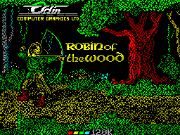
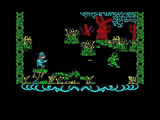
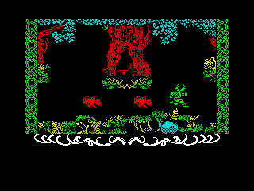
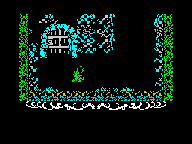
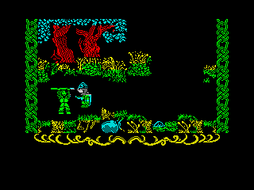
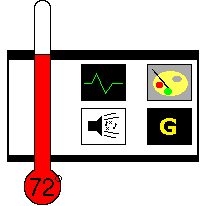

|
Robin of the Wood - Odin - 1986 |
|  | You're probably wondering where this fits into the Christmas theme, aren't you? Well, it's Christmas, right? And what little birdies do we see at Christmas? That's right - Robins. And, well... A Robin Hood game was as close as we could get. Oh dear, it all made sense when we were planning the issue. It's Jon's fault; I was going to review Denizen, but noo... Anyone'd think he was the editor, not me. Tch. You just can't get the staff these days... |
|  | 'Can you help Robin in his quest for the silver arrow?' the sampled speech asked as I loaded up the game. 'Well, I'll have a go,' I replied, and set off with the flick of a key into Sherwood Forest. And suddenly there stood Robin, proud and valiant warrior. The graphics really set the scene; your character looks heroic, which is always a good thing. Quickly I picked a direction and strode off deeper into the wood. Mere seconds later I ran across a pair of Norman soldiers. 'Ah ha!' I thought to myself, 'A couple of the Sheriff's men! Time for some action!' Lining myself up nice and accurately from the other side of the screen, and hammered at the fire button. Robin drew his sword and brought it down over his head, very, very slowly. The Norman soldiers drew their laser pistols and opened fire. 'Argh!' the sampled speech yelled. In a panic I realised that I had both overestimated my own weaponry and underestimated my opposition's, and decided that the best course of action would be to run towards them to engage in close combat. Robin took almost three steps before the hail of laser bolts brought him to his knees. 'Give me a chance!' begged the sampled speech, but the game was having none of it. Game over. |
| Cursing my foolishness silently, I started again. This time I ran into a lone soldier. Deciding to be more careful, I took cover behind the various assorted giant bushes. Finally he walked right past me, ignoring me apparently because I was further up the screen. I tapped the fire button. With all the speed of the Six Million Dollar Man, Robin drew his sword once again, bringing it slowly down onto the soldier's head. The soldier fell over. One up for the forces of good. Feeling a little better, I ran off into the woods again, only to be set upon by a giant hedgehog. Again I hammered fire, but by the time Robin had drawn his sword the hedgehog had moved. I decided to make a strategic withdrawal. In fact, most of the time I ran into something nasty, I was forced to run away. |  |
| Here's the problem. While Robin can leg it around Sherwood like an Olympic sprinter, he has the combat ability of Mr Tickle. In fact, Mr Tickle would probably do better in a fight, because he could at least tickle the opposition until they were too busy laughing to kill him. As if his lack of speed weren't enough, there's the fact that he's been given a sword. Now, I'm not against a bit of swordplay. I'm all for a bit of medieval duelling. But it's a bit tricky to run the enemy through when they're carrying laser guns. (There's no way they're bows, or crossbows, or any other kind of arrow-projecting device. The soldiers have no firing animation, and they fire lots of single-pixel wide lines very quickly. I've seen more of those than I've had hot dinners (but let's leave my dietary habits out of it). Those are lasers, matey, and no mistake.) Wouldn't it have been nice to give the player something to shoot back with? Especially since Robin Hood is famous for his archery skills? |  |
|  | But we can discard this. It takes a little getting into, but if you actually play it a few times you'll find yourself engrossed in Robin's quest. Eventually you get out of the forest, and into some castles, and some special characters turn up and things get a lot more interesting. |
|  |
Graphics: 70% The characters are generally solid and endearing, but the background is occasionally messy. Sound: 65% Lots of very nice sampled speech, and an okay background tune, but no other effects. Life Expectancy: 70% The map is nice and large, and you will get lost. Gameplay: 40% It takes a little getting into, but it quickly becomes lots of fun. Summary: A funky little maze game with some nice effects. Not bad at all. Nathan Cross |
Back to Contents